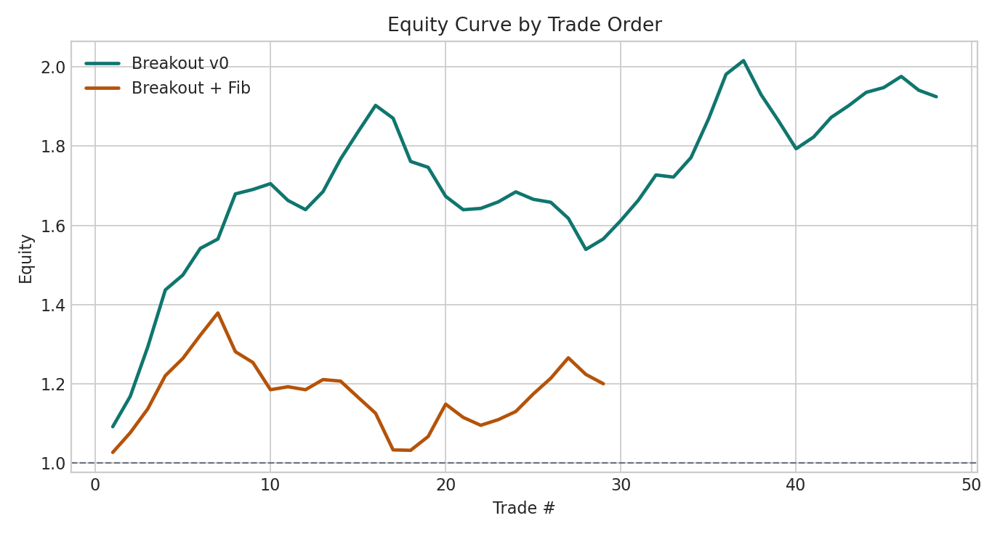
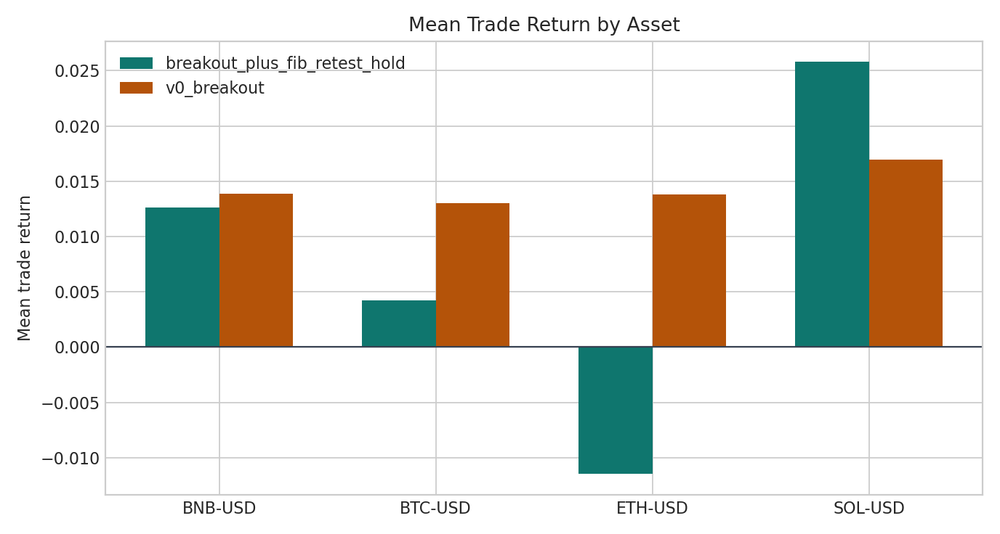

Fast small-loop deliverable / A/B honesty check
Breakout v0 vs Breakout + Fibonacci Retest-Hold
这页不是为了证明 fib 一定有效，而是把一个最小、能解释清楚的 fib 叠加逻辑放到同样本里，直接和 breakout v0 做 A/B。
A: v0 平均单笔
1.44%
A: v0 累计收益
92.45%
B: fib 平均单笔
0.71%
B: fib 累计收益
20.00%
B: 成交保留率
60.42%
这里的 Fibonacci 版属于假设型整合：不是现成主线 artifacts 的官方定义，而是为了做诚实对照，按固定规则把 breakout 事件延迟成“反抽到 fib 区后再做空”的最小变体。
Fib 版规则假设
- 仍然只从
support_breakout_raw事件出发，不新增别的候选池。 - 对每个 breakout，在事件前固定回看
48根 60m bar，找到最近一段下跌 swing：先取窗口最高点，再取该高点之后到事件时刻的最低点。 - 用这个 downswing 计算短空 retest 区：
38.2% ~ 50%反抽区。 - breakout 后最多等待
36根 bar；只有价格反抽进入 fib 区且当根收盘重新压回fib38下方，下一根开盘才做空。 - 随后仍固定持有
24根 bar，同资产不重叠。
A/B 结论
- A 组 breakout v0 在这批样本上更直接、更强：平均单笔 1.44%，累计 92.45%。
- B 组 fib 版虽然把样本压缩成 29 笔，并把平均入场延迟拉到 12.48 根 bar，但没有跑赢 A 组；它更像“把一部分顺势直接跌下去的好机会等没了”。
- 因此当前最诚实的读法不是“fib 增强 breakout”，而是“在这批小样本里，简单 breakout 比 breakout+fib retest 更值得先留作 v0 主线”。
Fibonacci 这条线的最终结论
- 它原本想解决什么：给 breakout short 增加一个“别追在最差位置、等反抽确认后再做空”的过滤层。
- 它确实改善了什么：更像改善了“少追太早、少碰一部分噪声反抽”的机制表达；在这页里最直接的体现是把样本压缩成更少、更晚的交易。
- 它没改善什么：没有改善主线最关心的收益结果——A 组 v0 平均单笔约
1.44%、累计约92.45%，而 fib 版只有约0.71%、累计约20.00%，同时平均入场还延迟到约12.5根 bar。 - 为什么不再当主 alpha：
Fibonacci retest_hold这轮没有证明自己是更好的通用增强器；它更像把不少顺势直接下跌的好机会等没了，所以不进入主线 alpha。 - 正式收口：后续把它降级成 optional filter candidate / archived idea，不再继续单独开主研发回合。
- 主线取舍：这次收口后，breakout short 保留，Fibonacci 过滤层归档。
如果以后再回来看这条线，唯一合理的问题应该是：“在更明确的下跌 regime 里，它能不能当一个小过滤器？”——而不是把它重新包装成主 alpha。
它在当前项目里到底算什么？
- 当前正式标签：
optional filter candidate。 - 不是：主 alpha，也不是当前还要单独继续投入主研发轮次的 active branch。
- 比 teaching example 更强一点：因为它确实教会了我们一件有用的事——“确认层可以改善机制诚实度，但不一定能救活 alpha”。
- 比 future revisit candidate 更近一点：因为它不是彻底作废；若以后明确只研究
downtrend/ 更弱环境下的 breakout short filter，它仍有小概率被重新拿出来做窄验证。 - 一句话：当前最诚实的归类就是 optional filter candidate with archived status。
A/B 汇总表
| strategy | trades | assets | mean_return | median_return | win_ratio | cumulative_return | max_drawdown | avg_entry_delay_bars | trade_keep_ratio_vs_v0 |
|---|---|---|---|---|---|---|---|---|---|
| v0_breakout | 48 | 4 | 1.44% | 1.52% | 64.58% | 92.45% | -19.11% | 0.00 | 100.00% |
| breakout_plus_fib_retest_hold | 29 | 4 | 0.71% | 1.30% | 55.17% | 20.00% | -25.14% | 12.48 | 60.42% |
按 split 看 honesty
| strategy | split | trades | mean_return | median_return | win_ratio | cumulative_return | max_drawdown | avg_entry_delay_bars |
|---|---|---|---|---|---|---|---|---|
| v0_breakout | test | 10 | -0.09% | 1.03% | 60.00% | -1.12% | -3.76% | 0.00 |
| v0_breakout | train | 28 | 1.65% | 0.94% | 60.71% | 53.91% | -19.11% | 0.00 |
| v0_breakout | validate | 10 | 2.41% | 2.92% | 80.00% | 26.46% | -3.44% | 0.00 |
| breakout_plus_fib_retest_hold | test | 8 | 0.43% | 0.03% | 50.00% | 3.14% | -5.17% | 14.25 |
| breakout_plus_fib_retest_hold | train | 15 | 1.11% | 2.16% | 60.00% | 16.60% | -15.43% | 7.33 |
| breakout_plus_fib_retest_hold | validate | 6 | 0.09% | 0.60% | 50.00% | -0.21% | -8.31% | 23.00 |
不同行情下表现如何
这里也用同样的简单标签：按入场前 24 根 60m bar 的价格变化，把样本粗分成 up / flat / down。这不是最终 regime 模型，只是帮我们快速判断 fib 过滤器是不是在某一种市场状态下更有价值。
| strategy | regime | trades | mean_return | median_return | win_ratio | cumulative_return | max_drawdown | avg_entry_delay_bars |
|---|---|---|---|---|---|---|---|---|
| v0_breakout | down | 6 | 1.00% | 1.07% | 50.00% | 5.98% | -1.11% | 0.00 |
| v0_breakout | flat | 26 | 2.41% | 2.17% | 73.08% | 81.27% | -12.12% | 0.00 |
| v0_breakout | up | 16 | 0.04% | 0.77% | 56.25% | 0.18% | -13.89% | 0.00 |
| breakout_plus_fib_retest_hold | down | 4 | 4.00% | 5.22% | 75.00% | 16.74% | -1.79% | 11.75 |
| breakout_plus_fib_retest_hold | flat | 16 | 1.45% | 2.42% | 68.75% | 24.70% | -8.58% | 9.94 |
| breakout_plus_fib_retest_hold | up | 9 | -2.06% | -2.13% | 22.22% | -17.56% | -16.33% | 17.33 |
这张表最值得记住的点有两个：第一，v0 在 flat 环境最强（平均单笔 2.41%），说明它更像震荡偏弱 / 刚转弱环境的短空 alpha；第二，fib 虽然在 down 行情里看起来更亮眼，但样本只有 4 笔，不足以支撑继续主线研发。
图：交易序列累计净值

图：各资产平均单笔收益
